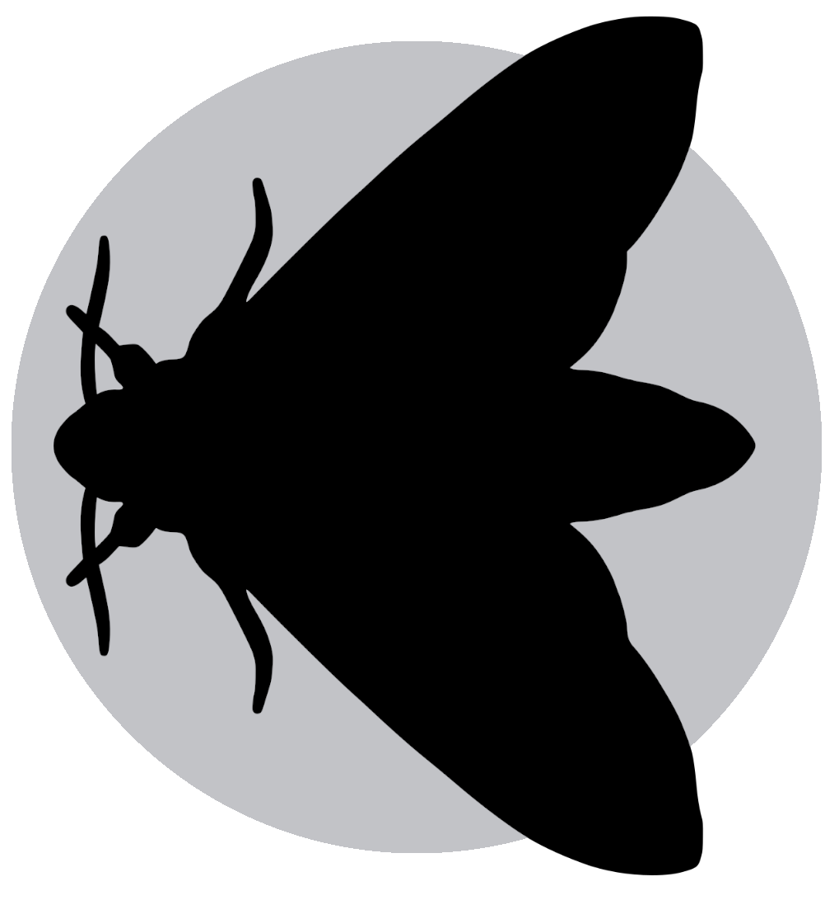

9 Fundamental exercise

To reinforce what you have learnt please try the exercise in this chapter.
Solutions are in the expandable boxes. Try your best to solve the challenge but use the solutions for help if you would like. Even if your solution works it can be good to check the solution as there are many ways to do the same thing in python.
In this exercise you are going to create, investigate, and manipulate data of UK moths found in light traps.
9.1 Fundamental exercise notebook
Create a new notebook called "02-Fundamental_exercises". Use this notebook to carry out the exercises.
Remember to use markdown cells to make headers.
9.2 Moth light trap challenges
9.2.1 Challenge 1

Create a list variable called "moth_sightings_21sep" with the ordered string values:
- "Poplar Hawk-moth"
- "Elephant Hawk-moth"
- "Elephant Hawk-moth"
- "Cinnabar"
- "Poplar Hawk-moth"
- "Scarlet Tiger"
- "Scalloped Oak"
This is the species of the individual moths that visited the light trap on the 21st night of September.
Then view the list.
9.2.2 Challenge 2
Using python code calculate the percentage of individuals that were Elephant Hawk-moths in "moth_sightings_21sep".
Tip: Operators, the function len() and the method .count() (it can be used on string lists) will be useful.
9.2.4 Challenge 4
Create a new list variable called "moth_sightings_22sep" with the ordered string values:
- "Poplar Hawk-moth"
- "Elephant Hawk-moth"
- "Elephant Hawk-moth"
- "Cinnabar"
- "Feathered Thorn"
- "Scarlet Tiger"
- "Elephant Hawk-moth"
Tip: It can be useful to copy, paste, and edit previous code.

9.2.6 Challenge 6
This is a multi stage challenge. Subset the lists in the following ways:
- Subset the 1st value of "moth_sightings_21sep".
- Subset the 3rd to 5th values of "moth_sightings_22sep".
- Subset the second last value of "moth_sightings_21sep".
- Subset the first 4 values of "moth_sightings_22sep".
- Subset the values from the 5th to the end of "moth_sightings_21sep".
- Subset the three last values of "moth_sightings_22sep".